Excerpted from the Luminary
1C Guidance System Operations Plan.
Go directly to word: 10 20 30 40 50 60 70 80 90
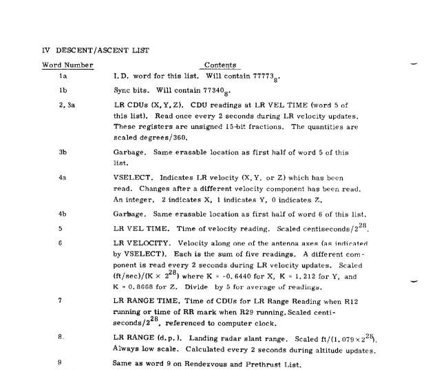
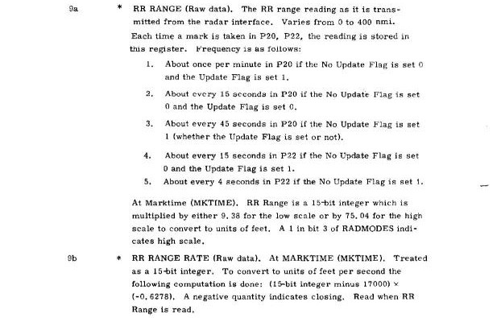


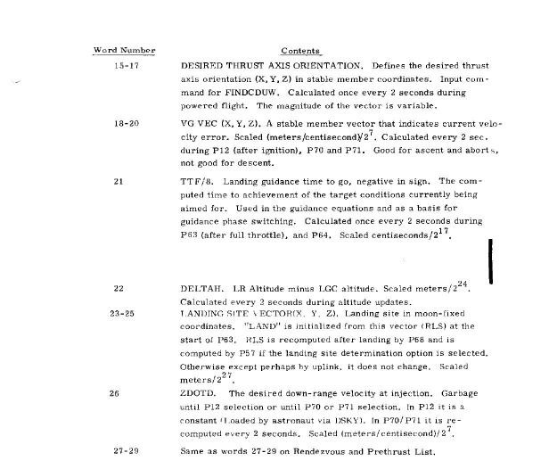
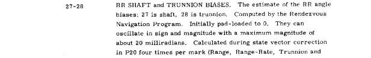
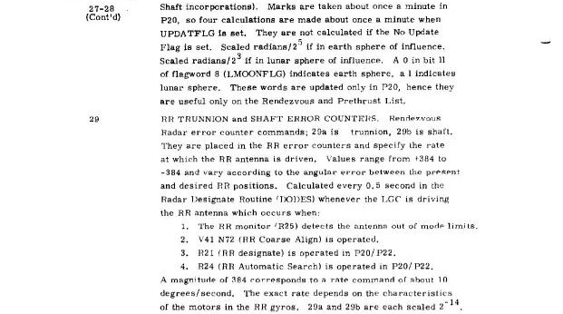
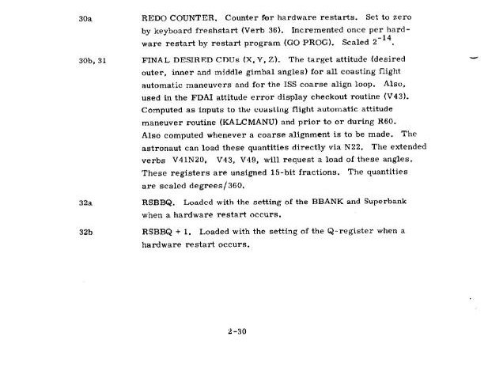


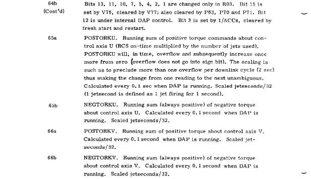
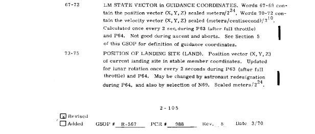
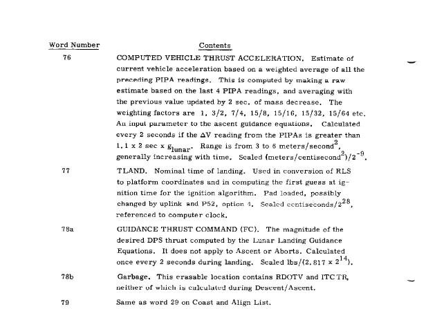
(Coast and Align)
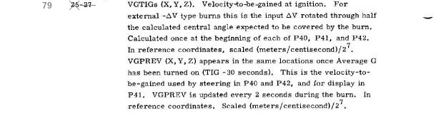
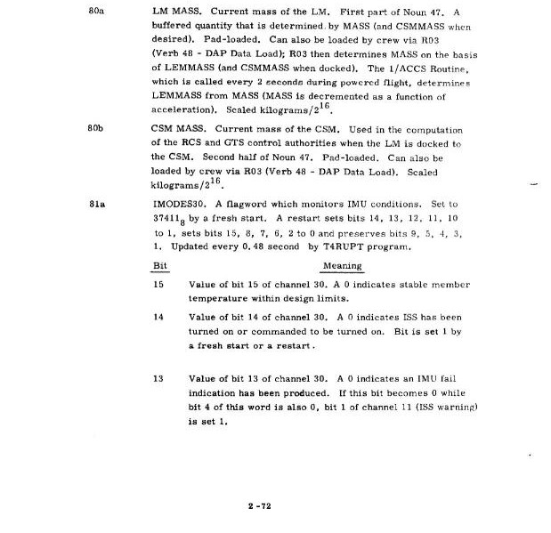
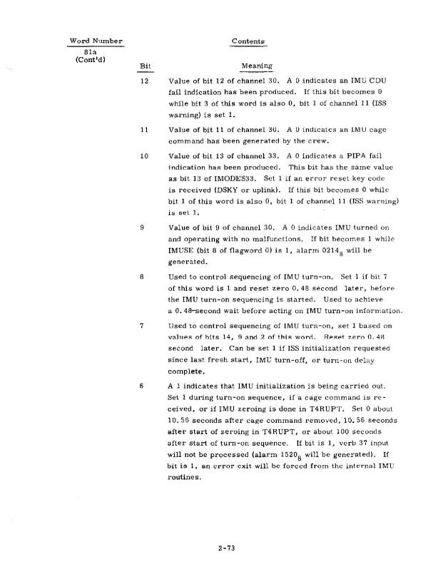
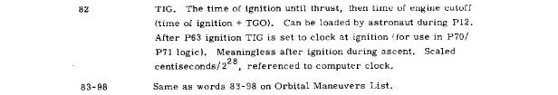
(Orbital Maneuvers)

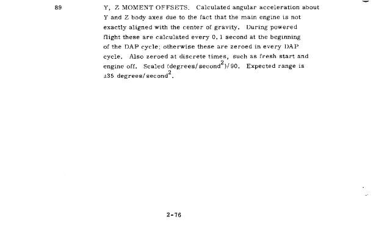


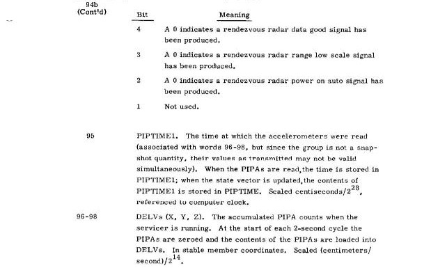
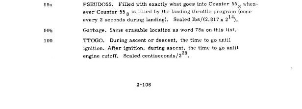
Last edited by RSB, 2025-03-13